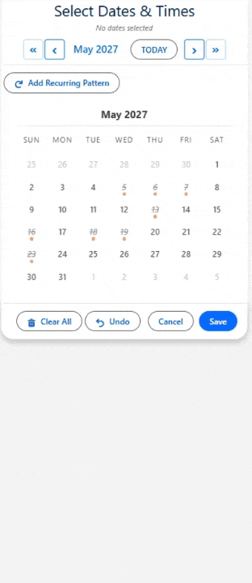

multiDatePickDateTime
Schedule Dates and Times in Salesforce Flows. Combine multi-date selection with per-date time picking for appointments, sessions, and shifts.

Overview
multiDatePickDateTime extends the date selection calendar with time picking. After selecting dates, users assign a start time (and optionally an end time) to each one using dropdown menus or a visual time slot grid. You control the time interval (15, 30, or 60 minutes), the visible time range, and whether each date can have a different time or all dates share the same time.
Use this component when your Flow or Record Page needs both a date and a time — for appointment scheduling, session booking, shift planning, or any workflow where the time of day matters.
On This Page
⚡ Lightning Page Instructions
What You Need First
Create a child object to store date+time entries. It needs a Date field, one or two Time fields, and a Lookup back to the parent. For example, an Appointment__c object:
| Field | Type | Purpose |
|---|---|---|
Appointment_Date__c | Date | Stores the selected date |
Start_Time__c | Time | Stores the start time |
End_Time__c | Time | Stores the end time (optional) |
Contact__c | Lookup | Links back to the parent record |
{!recordId} is passed automatically on Record Pages — you don't need to wire it manually.Drop It In
Drag multiDatePickDateTime onto your Record Page in App Builder and configure these key properties:
relatedObjectApiName— API name of your date/time object, e.g.Appointment__cdateFieldApiName— the Date field, e.g.Appointment_Date__crelationshipFieldApiName— the Lookup field back to the parent, e.g.Contact__cstartTimeField— the Start Time field, e.g.Start_Time__cendTimeField— the End Time field, e.g.End_Time__cenableEndTime— set to ON to show both Start and End Time pickersenableConflictCheck— set to ON to block overlapping time slots based on existing records
What Comes Out
🔄 Flow Instructions
What You Need First
Same object setup as Record Page above. Then create Flow variables based on your use case — pick one output approach:
| Variable Name | Type | Collection? | Notes |
|---|---|---|---|
{!selectedDates} | Text | Yes | Dates only (no time info) — use if you just need the dates |
{!dateTimesJson} | Text | No | Dates + times as JSON — feed to MultiDatePickParser for loopable entries |
Drop It In
Add a Screen element in Flow Builder, drag multiDatePickDateTime onto it, and configure:
label— button text, e.g. "Schedule Appointments"modalTitle— calendar modal title, e.g. "Pick Dates & Times"showInline— set to ON to embed the calendar directlyrelatedObjectApiName— your date/time object, e.g.Appointment__c(for auto-save)dateFieldApiName— the Date field, e.g.Appointment_Date__crelationshipFieldApiName— the Lookup field, e.g.Contact__cstartTimeField— the Start Time field, e.g.Start_Time__cendTimeField— the End Time field, e.g.End_Time__cenableEndTime— set to ON to capture both start and end timesselectedDates(Output) — wire to{!selectedDates}for dates onlyselectedDatesWithTimesJson(Output) — wire to{!dateTimesJson}for dates + times
What Comes Out
{!selectedDates} gives you a simple array of dates. For dates with times, feed {!dateTimesJson} to the MultiDatePickParser invocable action — it returns loopable entries with fromDate, toDate, startTime, and endTime fields. If you configured the Related Object fields, the component also auto-saves records with time data.All Properties Reference
Display Properties
All display properties from multiDatePickDates are also available (label, modalTitle, showInline, singleMonthView, calendarSize, etc.).
Time Selection Properties
| Property | Type | Default | Description |
|---|---|---|---|
timeInterval | Integer | 30 | Minutes between time options. Options: 15, 30, or 60. |
minTime | String | — | Earliest time in 24-hour format (HH:mm), e.g. 08:00. |
maxTime | String | — | Latest time in 24-hour format (HH:mm), e.g. 17:00. |
timeDisplayMode | String | grid | 'grid' (visual slot grid) or 'dropdown' (time pickers). |
allowDifferentTimes | Boolean | false | When ON with dropdown mode, each date gets its own time picker. |
enableEndTime | Boolean | false | When ON, shows a separate End Time alongside Start Time. |
Constraint Properties
All constraint properties from multiDatePickDates are also available (maxSelections, allowPastDates, minDate, maxDate, etc.).
Output Properties (Read-Only)
| Property | Type | Description |
|---|---|---|
selectedDates | String[] | Array of selected dates in ISO format, without time. |
selectedDatesWithTimesJson | String | JSON string with each date and its selected time(s). |
selectedDateRangesJson | String | JSON of consecutive dates grouped into ranges (no time). Only when outputAsJson is ON. |
Record Page Auto-Save Properties
All auto-save properties from multiDatePickDates are available, plus:
| Property | Type | Default | Description |
|---|---|---|---|
startTimeField | String | — | API name of the field for the selected start time. |
endTimeField | String | — | API name of the field for the selected end time. |
enableConflictCheck | Boolean | false | When ON, checks for time conflicts against existing records. |
conflictLookAheadDays | Integer | 180 | How many days ahead to check for conflicts. |
skipConflictsOnSave | Boolean | false | When ON in shared grid mode, conflicting dates are skipped at save time. |